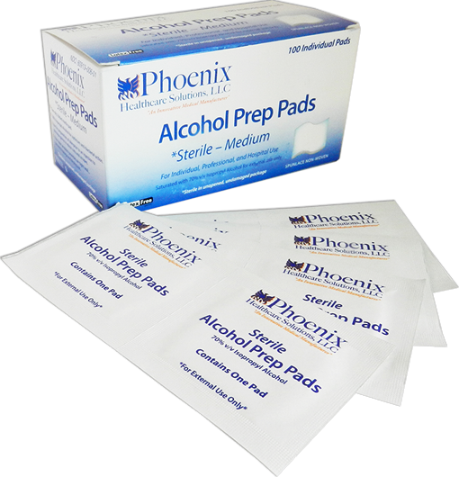

ALCOHOL PREP PADS
Prep Pads con alcohol, esterilización media

CARACTERÍSTICAS:
Toallitas impregnadas de alcohol, en sobres individuales.
Para la limpieza de la piel antes de ser sometida a un procedimiento.
Caja con 100 piezas.
DATOS COMPLEMENTARIOS: Para mayor información comunicarse a:
FORE CARE MÉDICAL, S.A. DE C.V.
Tels.: (55) 5568-8240, 5568-8061
e-mail: info@forecaremedical.com
atencionclientes@forecaremedical.com
ventasprivado@forecaremedical.com
ventasgobierno@forecaremedical.com
www.forecaremedical.com